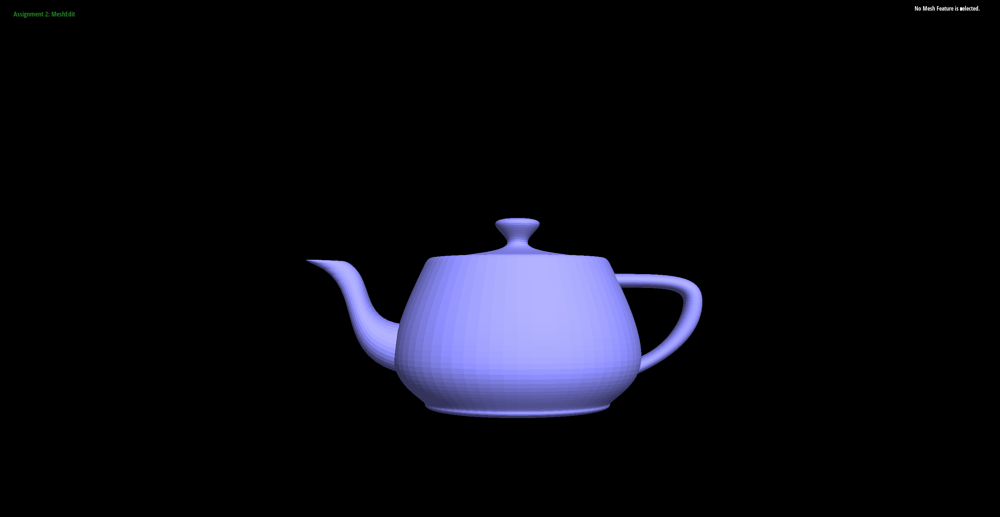
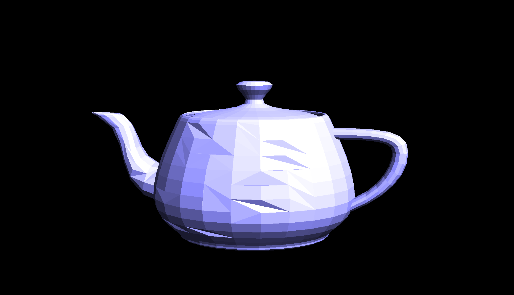
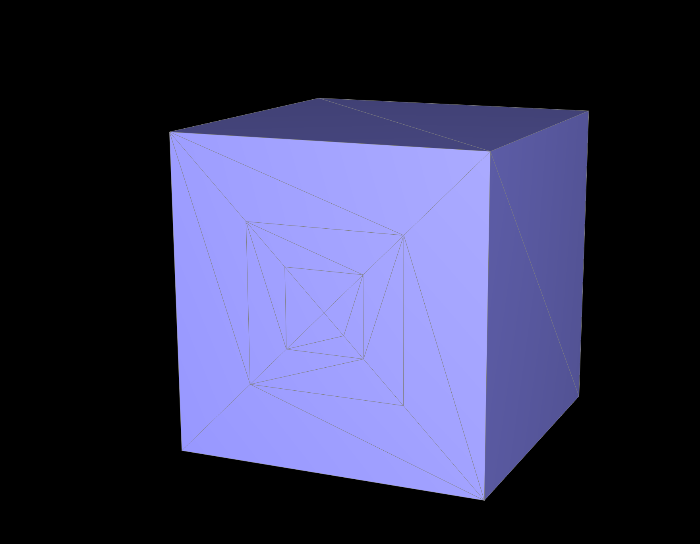
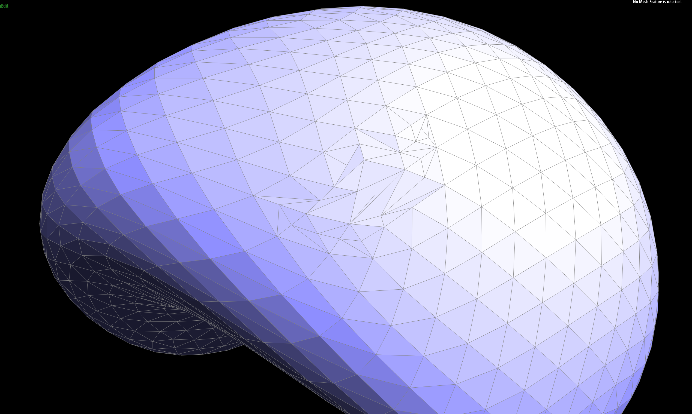

CS184/284A Spring 2025 Homework 2 Write-Up
Link to webpage: cal-cs184-student.github.io/hw-webpages-icant-see/
Link to GitHub repository: github.com/cal-cs184-student/hw-webpages-icant-see/
Overview
In this assignment, I implemented several fundamental geometric processing techniques including Bezier curves, Bezier surfaces, and mesh editing operations using the halfedge data structure. Section I of this assignment focuses on Bezier curves and surfaces with Casteljau's algorithm being the foundation behind it. Section II involved implementing mesh operations such as edge flips and edge splits, which would come in handy for performing loop subdivision for mesh upsampling. These tasks required carefully updating halfedge connections while maintaining the overall structure. My favorite part of the assignment was seeing how these functions can affect the shape of the surface. Overall, this assignment allowed me to really appreciate the inner-workings of 3D modeling techniques I have seen in the production of movies and games.
Section I: Bezier Curves and Surfaces
Part 1: Bezier curves with 1D de Casteljau subdivision
De Casteljau's algorithm evaluates a Bezier curve at parameters t ∈ [0,1] using repeated linear interpolation between control points. Given points from p1 to pn, the algorithm linearly interpolates between adjacent control points. This is derived from the formula p'i = (1-t)pi + tpi+1. This produces a new set of n-1 points in which the process is repeated on the new set. After enough subdivisions, one point remains, which lies on the Bezier curve at parameter t.
One level of subdivision is implemented inside BezierCurve::evaluateStep(...). The function takes a vector of 2D points and loops through
adjacent pairs. It computes the linear interpolation using (1-t)pi + tpi+1 and stores that result in a new vector, which is
returned when it is finished.
Below are each step of the evaluation + a different Bezier curve

|

|

|

|

|

|
Part 2: Bezier surfaces with separable 1D de Casteljau
The idea in part 2 is quite simple. Instead of working in 2D, we just apply 1D twice. Each row of control points form a Bezier curve. Then use de Casteljau's algorithm at each parameter u. The points obtained from the rows now form a new Bezier curve, to which we can also evaluate at this parameter v. This works because Bezier surfaces are tensor products of Bezier curves, so we can apply the 1D solution in each direction.
evaluateStep is the same idea as implemented in task 1. evaluate1D repeatedly calls evaluateStep until one point
remains. It returns the final evaluated point on a Bezier curve. evaluate is the actual implementation of the intuition of applying
de Casteljau's algorithm in each direction. First evaluate each row at u, then each resulting point at v.

Section II: Triangle Meshes and Half-Edge Data Structure
Part 3: Area-weighted vertex normals
To compute a smooth normal at each vertex, I used the half-edge data structure to iterate over all faces incident to the vertex.
This is done with the code h = h->twin()->next();.
For each non-boundary face, I retrieve the three vertex positions of the triangle, and computed the face normal using a cross product
(p1 - p0) * (p2 - p0). This vector is added to a running sum. After summing all the normals, I normalized the final vector to obtain
a unit vertex normal

|

|
Part 4: Edge flip
I implemented the edge flip operation in the half-edge data structure by updating the connections around the chosen edge. An edge flip replaces the diagonal shared by two adjacent triangles with the other diagonal of the quadilateral without adding or deleting any mesh elements.
This part of the assignment took quite a bit of time wrap my head around the operations needed to implement this. As per spec, it was mentioned to include a boundary check using the included
isBoundary() function for each mesh.
Starting from the edge's halfedge h0 and h1, I collected the 6 halfedges in the two triangles from h0
to h5, the 4 vertices of the local quad a,b,c,d, and the 2 faces f0, f1.
For vertex(), I reassigned their pointers in order to perform a flip ((b,c) becomes (a,d)).
next() pointers form two new triangular cycles created by the previous flip.
face() pointers were reassigned for the three halfedges belonging to each face.
Lastly, halfedge() pointers were reassigned for faces, edges, and vertices such that each points to a valid incident halfedge.

On my first attempt at this, I ran into an issue where it appeared that each flip appeared to remove the edge from the model. After a long break, I really took my time to ensure that the pointers were reassigned correctly to which upon a few more attempts, it thankfully worked.
Part 5: Edge split
I implemented the edge split operation by inserting a new vertex at the midpoint of the selected edge and updating the connections of the two adjacent triangles. Given two triangles sharing an edge (b,c), the operation inserts a new vertex m at the midpoint of that edge and connects it to opposite vertices a and d. As a result, it splits the two triangles into 4 triangles.
Since my implementation does not have boundary support, we first perform a isBoundary() check and returned if the edge was on the boundary.
Similar setup to Part 4, we start from the edge's halfedge h0 and twin h1 and move to collect 6 other halfedges around the
two incident triangles, the four vertices, and the faces f0, and f1. Since the split creates new mesh elements, we have to create
a new vertex, two faces, three new edges, and their corresponding halfedges.
To ensure placement, the new vertex position was set to the midpoint of the original edge 0.5 * (b->position + c->position). From here,
it is just reassignments of vertex(), next(), face(), and edge() pointers such that the new elements
form valid halfedges. We also have to update surrounding halfedge() pointers so that each element references the correct halfedge.
While debugging, I found that though the edges were in fact splitting, it would appear that there was an error in my reassigning logic causing my edges to warp inwards. Fortunately, this did not take me very long to debug as I noticed an inconsistency in my assigned twin and next pointers, to which after rewriting a good portion of the code, it was resolved.


Part 6: Loop subdivision for mesh upsampling
I implemented loop subdivision by following the steps described in the assignment. First, I computed the updated positions for all original vertices
using the loop subdivision weighting and stored the result in Vertex::newPosition. I then computed the positions of new vertices that
would be inserted on edges using (3/8)*(A+B) + (1/8)*(C+D) which was then stored in Edge::newPosition.
Next I split every edge from the original mesh and marked newly created certices with isNew = true. The position of each new vertex was set using the
value stored in the corresponding edge. After splitting the edges, I flipped any new edge that connected one old vertex and one new vertex in order to properly
connect them after a loop subdivision. The last step was to update all vertex positions by copying newPosition into position.
After several iterations of loop subdivision, sharp edges and corners become smoother because my implementation moves vertices twoard the average of their neighbors. When subdividing the cube, the mesh becomes asymmetric due to the diagonal triangulation of each face. Knowing this, the solution is quite simple. All that needed to be done was to split edges on each face such that there would be 4 triangles on each face of the cube, ensuring symmetry when subdividing.

|

|

|

|

|

|